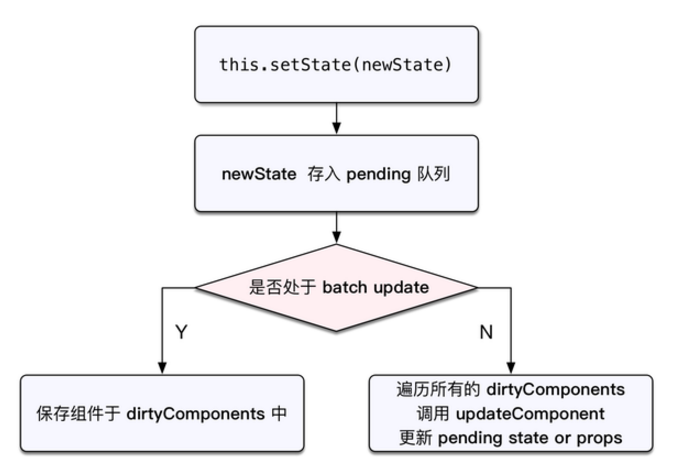
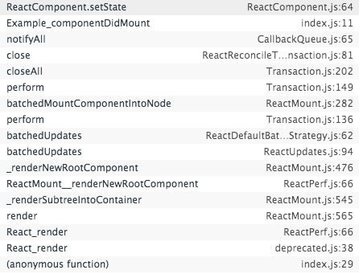
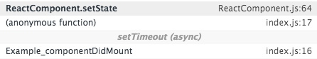

占坑的文件已经在硬盘里躺尸几天，天知道我从有“诶，来写篇博文吧。”这个念头到真正动笔已经过了几天。。 /w\
本文默认你以有一些 React 的基础，并且已经应用在实际项目中。
context 与 SCU
通常我们把想要的 数据/handleMethod 通过 props 向下传递，当组件多级嵌套时这显得很繁琐， 某两个组件维护的 state 竟然要靠其他人一级级传递。。。然后我们用起了 context，简单的 API 后是强力的效果。上层与底层组件直接连接，而且 lifecycle 和 stateless 组件中都能使用它。 可为啥我点开链接看到的却是 Why Not To Use Context？likely to break in future releases…
context 的问题关键在于，上层组件的 context 发生改变时，如果中间的某个组件的 SCU（shouldComponentUpdate）显式或者隐式的返回了 false。BOOM！下层依赖于 context 的组件不会 re-render。
官方Doc context 页面底部贴了一篇博文详细的解释了这个问题 How to safely use React context 。
解决思路大概有：
- 不用
- 不改
- 上面博文提到的 底层组件依赖注入 然后使用 forceUpdate 强制更新
有兴趣的同学可以读读那篇文章。
理解 setState
this.setState() 方法应该是我们在 React 中最早熟悉的 API 之一 。更改组件的 state 引发 re-render 使组件更加灵活，大部分情况下它都能达到我们的预期效果。然而它的背后还有一些细节，关于新 set 的 state 哪些会被合并 re-render，那些又是立即 re-render 呢？
先看看下面这个经典的例子。
|
|
4 次 log 的值分别是：0、0、2、3。

上图简单揭示了 setState 的调用流程。在 React 内部有个 Transaction 的概念，可以理解为包装过的 method，在真正的 method 执行之前为其添加一下前置和后置的任务，而且具有非常好的扩展性。显然这里的 setState 实际上便是一个 Transaction 。查看 setState 的调用栈我们果然看到了 setState 之前的 batchedUpdates ，以及 Transaction 流程中的一系列方法。


当然上面 2 类 setState 是不同的。
|
|
上面的代码节选自源码 ReactUpdates.js ， 其中的batchedUpdates 方法来自 ReactDefaultBatchingStrategy.js ，在 React 初始化时由 ReactDefaultInjection 注入到 ReactUpdates 中作为默认的更新策略，在所有的 liftcycle 中的 Willxxx 方法里它都会将标志位 isBatchingUpdates ＝ true，这导致了如果有再来的 state 都会被推入 dirtyComponents 数组中等待合并处理。
而对于推入 dirtyComponents 中的 state，React 会按照先后顺序做类似 Object.assign 的处理然后只进行一次 render。
理解 setState 背后的运行机制配合 lifecycle ，会让我们在编写代码时候思路更加清晰。是非常有必要的。(￣ー￣〃)
state mgmt
状态管理这种东西，社区里有多的框架作解决方案，虽然他们都会带来一套 Template code ， 但 Template code 都不是事好吧，不然在复杂项目中 Model 层中一个字段发生变化触发 change 事件，你都不知道会有多少组件发生 re-render。
而且严格按照框架约定的维护 state 除了扩展性好，写的时候思路也清晰的一b。
还有一点，既然是按照约定的 Template code ，最好是能在项目构建的时候就约定好。：）
。
自己离校工作已经一个月多了，慢慢习惯了节奏，工作日认真帮公司做事，休假在家躺尸看剧。。一下子感觉落后的很多，拖了很就才写了这篇博文。之后要把买的书读了，然后关注社区接触新的东西，写更多的文字。
许了很多愿（挖了很多坑），希望都可以一步步实现。